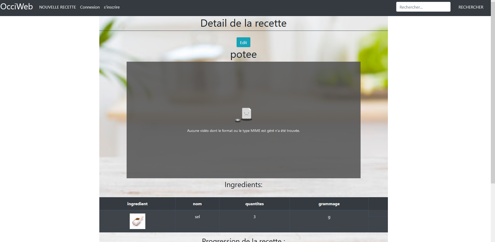
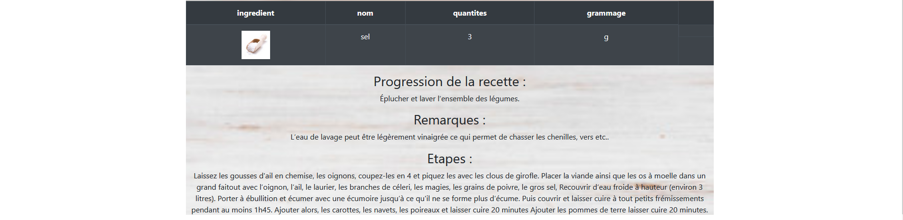
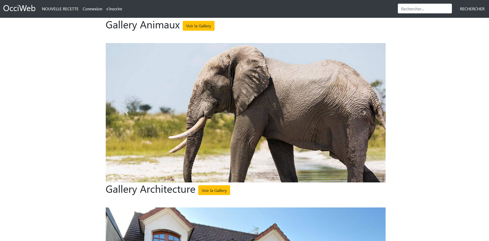
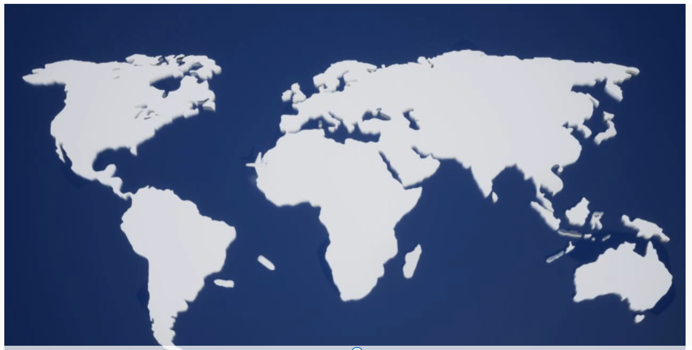
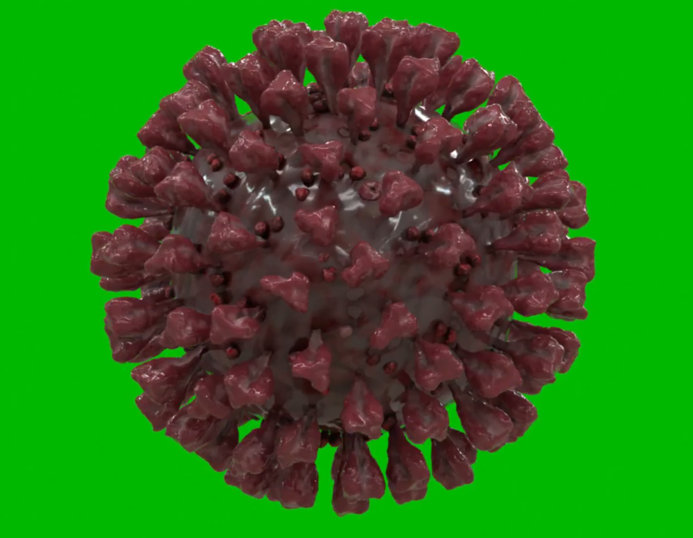
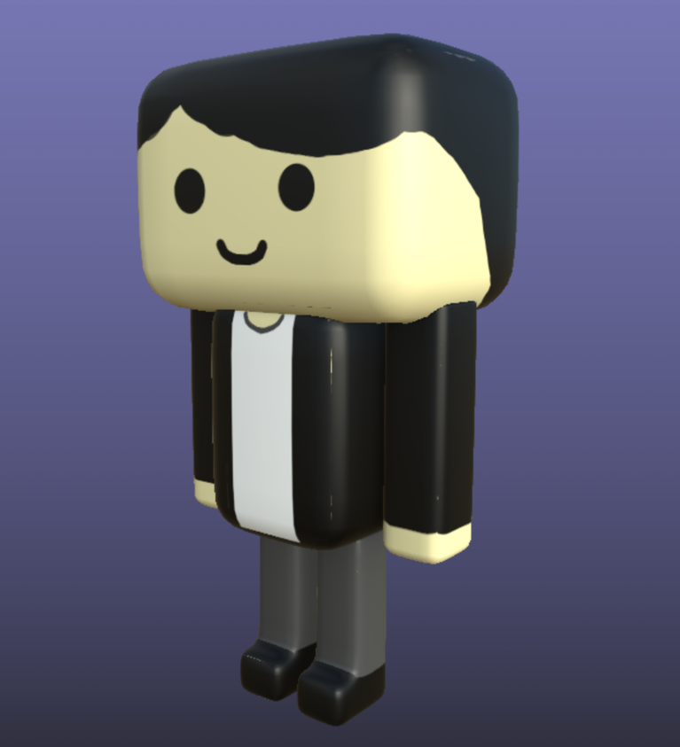

Articles
Stage – Conception d’un site Web (OCCIWEB) (6 semaines):
La fin d’une année étudiante a ynov se caractérise par un stage. C’est ainsi que cette
année dans le cadre du stage, j’ai été accepté par une web-radio toulousaine.
Constitués d’un groupe de quatre étudiants de la filière, nous étions amenés à refaire
le site de cette radio en six semaines. Le site web de cette radio présentait en effet
de nombreux problèmes. C’est ainsi qu’on a pris l’initiative de recommencer le site à
zéro après l’autorisation de notre maître de stage.
Étant en plein été en temps Covid, nos semaines étaient organisées de manière à être
en “ semi-présentiel”. On travaillait donc à la radio le lundi et le mardi, et le reste
du temps, on travaillait en télétravail. L’ensemble de notre stage était donc essentiellement
dédié à ce site, mais ceci ne nous a pas empêchés de réaliser des podcasts aussi.
Le site étant à refaire de zéro, nous avons dû utiliser toutes les connaissances acquises
depuis le début d’année pour ce site notamment Laragon pour faciliter la gestion des
informations et la mise en page des différents éléments, mais aussi du PHP et du HTML.
C’est ainsi qu’après six semaines de travail et quelques difficultés notamment dans
la gestion d’une page de formulaire pour des recettes, nous avons pu finir une bonne
partie de ce site et le rendre fonctionnel en partie.



Développement logicielle – Bataille Navale (8 semaines):
Pendant notre année au sein d’Ynov, nous étions amenés à effectuer des projets en
groupe en fin d’année. Nous étions donc en amener à utiliser diverses technologies
apprises pendant l’année pour mener à bien nos projets, mais aussi celles apprises
hors formation. Et tout ceci en C++ qui est notre langage de programmation pour ce logiciel.
C’est donc dans une équipe constituée de trois personnes que nous avons décidé de réaliser
un projet dit personnel. Parce qu’il n’était pas en liste des projets a choisir. Nous avons
donc choisi de présenter un jeu assez populaire qui porte le nom de la bataille navale.
En effet, ce jeu parut la première fois en 1931 qui consiste à éliminer tous les navires
adverses sur une grille de 10x10 à l’aveugle était une réelle source d’inspiration pour nous.
Sous son principe simple, nous y avons dédié une IA. Celle-ci étant totalement indépendante,
elle est capable de sélectionner elle-même les cases de ses bateaux ainsi que les cases qu’elle
va sélectionner en jeu.
Ce projet se déroulant sur 8 semaines, nous avons dans un premier temps géré notre déroulement
de projet. C’est-à-dire repartir le projet sur le temps de manière à se faire une marge de
temps avant la fin de projet pour éviter les erreurs de dernières minutes. Le projet, c’est
déroulement dans les meilleures conditions et nous réussit à le rendre dans les temps tout en
faisant un travail de qualité.
.png)
Responsive design - Site web:
Tout d’abord, qu’est-ce que c’est ? Le responsive design dans sa définition la plus simple,
est la technologie qui permet à une page d’être la plus adaptée quelle que soit la plateforme
sur laquelle elle est consultée.
Grâce à nos cours et nos projets des années précédentes, nous avons donc acquis les bases,
mais aussi les différents usages et méthodes pour rendre nos pages web de plus en plus
adaptatives.
Ainsi les pages web deviennent plus propres et plus agréable visuellement.
Se savoir étant presque fondamental, il est intégré dans l’ensemble des pages web que
nous réaliserons, et cela nous a même été nécessaire dans nos différents stages de fin
d’année et surtout le mien.
En effet, le site web de l’entreprise dans lequel j’avais réalisé mon stage était loin
d’être responsive. On a donc spécifié cette caractéristique comme étant prioritaire.
Et c’est avec un grand plaisir que cela a su plaire à notre entreprise.
C++ - Conception d’un jeu de rôle (8semaines):
Au cours de notre formation à ynov dans le domaine de la programmation nous avons eu à
travailler l’un des langages des plus connus qui se nomme le C++.
C’est ainsi que pour notre formation nous avons du développer un jeu du type “jeu de rôle ”.
En effet, ce jeu mettait en œuvre trois types de personnages : les guerriers, les mages et
les voleurs. Tout dotés d’une résistance et d’une capacité, nous étions amenées à les faire
passer dans une boucle de jeu où ceux-ci étaient aléatoirement frappés par des objets aux
dommages différents en fonction de leur type. Le but final étant de voir qui allait survivre
aux aléas auxquels ils y seront confrontés.
Ce jeu étant a réalisé sur deux mois il était pour nous vraiment très utile car il
nous a permis d’apprendre à se spécialiser dans ce langage qui jusque-là n’avait été
qu’une découverte.
Projet Ydays – Virus Simulator (11 séances x 8 heures):
Chaque année ynov nous offre la chance de mettre en avant nos idées à travers l’école.
C’est ainsi que pour les projets de ydays on est amené à réaliser un projet dans un
groupe constitué d’étudiants de toutes les branches du campus afin de réaliser celui-ci.
C’est ainsi que dans un groupe de quatre composés d’étudiants en informatique et en
animation 3D nous avons réaliser un simulateur de virus.
Étant chef de projet avec Georges qui est un étudiant de la même filière que moi,
nous avons eu l’idée de développer ce simulateur qui nous semblait coller avec la
situation Covid que connaissait le monde.
Ce simulateur était surtout axés sur l’aspect contagion. C’est-à-dire qu’il nous
montrait l’étendue de contamination que pouvait avoir ce virus sur l’ensemble d’une
population prédéfinie. En effet, pour que ce simulateur fonctionne, certains paramètres
tels que le nombre de personnes qui compose l’expérience, mais aussi le taux de contagion
et de mortalité sont à prendre en compte.
Les étudiant en animation nous ont donc permis d’avoir un visuel sur l’application avec
des vidéos animées, des personnages, et bien encore, tandis que nous nous focalisons sur
la partie algorithmique de ce projet
C’est ainsi qu’après-près de onze séances, nous avons fini par rendre ce projet qui nous
a permis de développer le travail en équipe et d’apprendre l’entraide d’un groupe.


